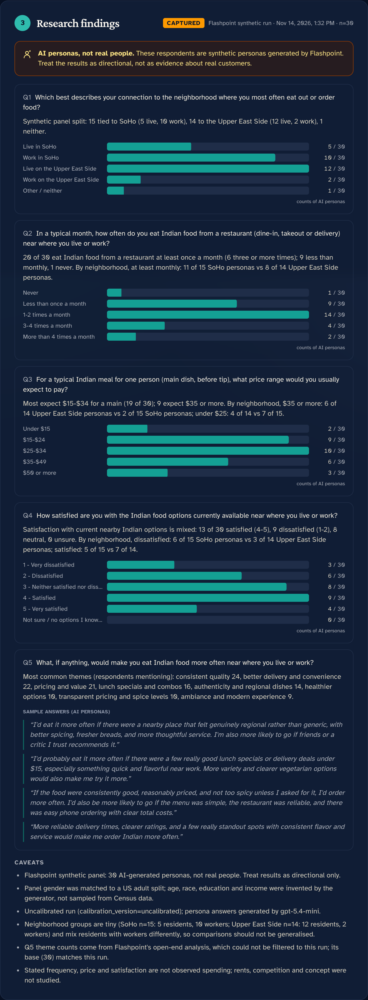

Hack the Unreachable · Self-Improving AI
An AI that finds what it doesn’t know, goes and asks, and tells you honestly whether the answer changes anything.
1 · ANALYZE
Frame the decision
A provisional pick and its assumptions
2 · BLIND SPOT
Find the gap
Rank unknowns by impact
3 · RESEARCH
Go ask
Survey on a Flashpoint.AI synthetic panel
4 · REASSESS
Be honest
“No change” is an allowed answer
